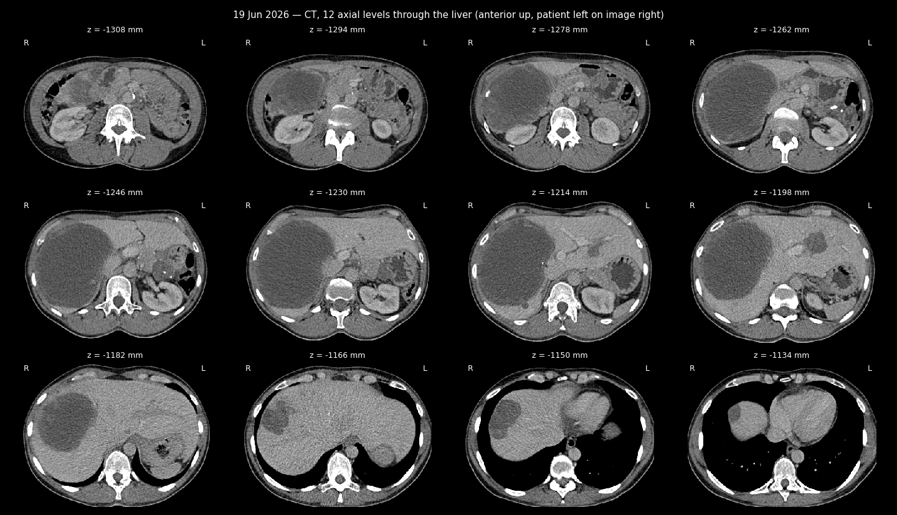
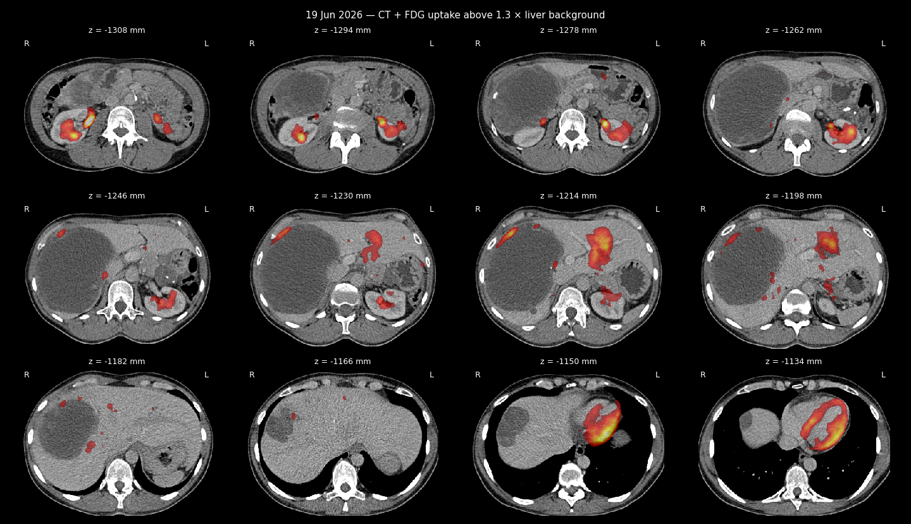

Retrospective radiology analysis of the 19.06.2026 PET-CT (Dr. M. Novikov) — English translation
PET-CT of 19 Jun 2026 — images from the study
CT sheet, 12 levels through the liver

CT + FDG uptake sheet

LISOD Radiology Report — Retrospective PET-CT Analysis (English Translation)
Source (Ukrainian original): docs_eng/anastasia_disks/June_19_2026_PET_CT/Жерліцина_Анастасія_Станіславівна_Радіологічний_звіт_загальний_640997.pdf
Facility: LISOD, Radiology Diagnostics Department
Patient: Zherlitsyna Anastasiia Stanislavivna, ID 110889, DOB 25.04.1976
Report date: 08.07.2026
Study: retrospective analysis of provided imaging studies (PET/CT with FDG from 19.06.2026), compared to prior PET/CT with FDG from 13.05.2025 and 14.03.2024
Reporting physician: Novikov M.Ye.
Clinical background (as stated in report)
ICD-10: C16.9 - Malignant neoplasm of stomach, unspecified. Diagnosis: Leiomyosarcoma of uterine body, T2NxM1, secondary liver and peritoneal involvement. Status after 4 cycles of Gemcitabine + Docetaxel + Avastin chemotherapy with liver progression (per CT/MRI 10/2022). C-KIT, MET mutation detected (ONCOMINE). Status after Pazopanib treatment (05-12/01/2023) with PRES development and positive CT dynamics. 01/2023 - repeat liver biopsy, histology: uterine leiomyosarcoma metastasis. Status after 3 cycles of Trabectedin with negative radiological dynamics (PET/CT 11/04/2023). Suspected synchronous gastric neoplasia (GIST?). Status after EUS-FNA gastric biopsy, liver core biopsy - histologically GIST of stomach, GIST metastasis to liver (CSD). 08/2023 - status after 4 months Imatinib with pronounced positive PET/CT response. 03/2025 - status after 2 years Imatinib, positive clinical picture. 05/2025 - stable radiological dynamics on Imatinib.
Findings
Head and neck: No changes characteristic of metabolically active aggressive neoplastic involvement, same as prior imaging. No significant change since 13/05/2025, no new active or suspicious lesions.
Chest: No changes characteristic of metabolically active aggressive neoplastic involvement, same as prior imaging. No significant change since 13/05/2025, no new active or suspicious lesions. No excess pleural/pericardial fluid, no large vessel thrombi.
Abdomen and pelvis: Known foci and masses in the liver are generally stable in size overall; however, mural (wall) components within them — particularly in the largest lesion in the right lobe — show new nodular elements with notable enhancement and partial focal moderately increased activity, moderately higher than the hepatic blood pool. This is best seen in nodule "42" in the left lobe, with uptake up to SUVmax 3.2 (adjacent parenchyma SUV 2).
No new separate similar active or suspicious nodules found.
Known residual gastric tumor without significant activity; nodule above the bladder/uterus on the right also without significant activity and without change.
No new separate active or similar nodules, no new suspicious lymphadenopathy found.
No signs of bowel obstruction, ascites, hydronephrosis, bile duct dilation, or large vessel thrombi.
Bones and soft tissue: New elongated/geographic lucency in the femoral head of the right hip, approximately 31mm, with a sclerotic rim and moderate activity, currently without flattening/deformity of the head. No other new active/suspicious bone lesions found.
Radiological conclusion
New mural (wall) components with moderate activity within the liver lesions, raising suspicion of return of viable tumor elements of GIST metastases.
Physician: Novikov M.Ye.
[Translation note: plain-language English translation of the Ukrainian original for reference purposes; not a certified medical translation.]